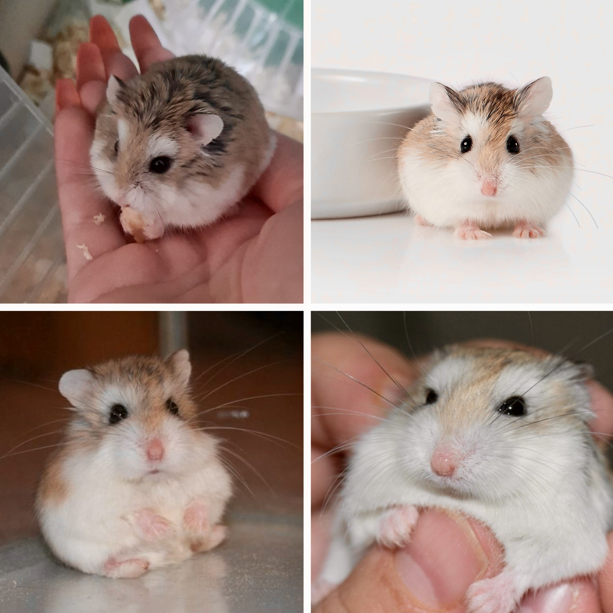

Roborovski Hamster
Roborovski hamster is the smallest of all types of hamsters, with a length of only 4.5 to 5 centimetres. The animal has a yellow to rusty coat with a white belly. Above its black eyes there are white hairs that look like eyebrows. It was only introduced in Western Europe in the 1980s and is therefore not yet very well known here.